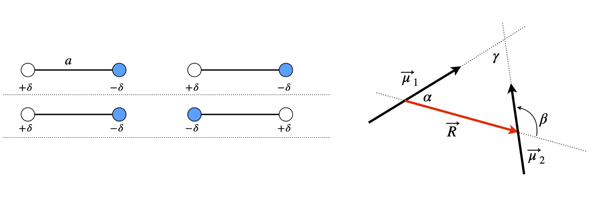
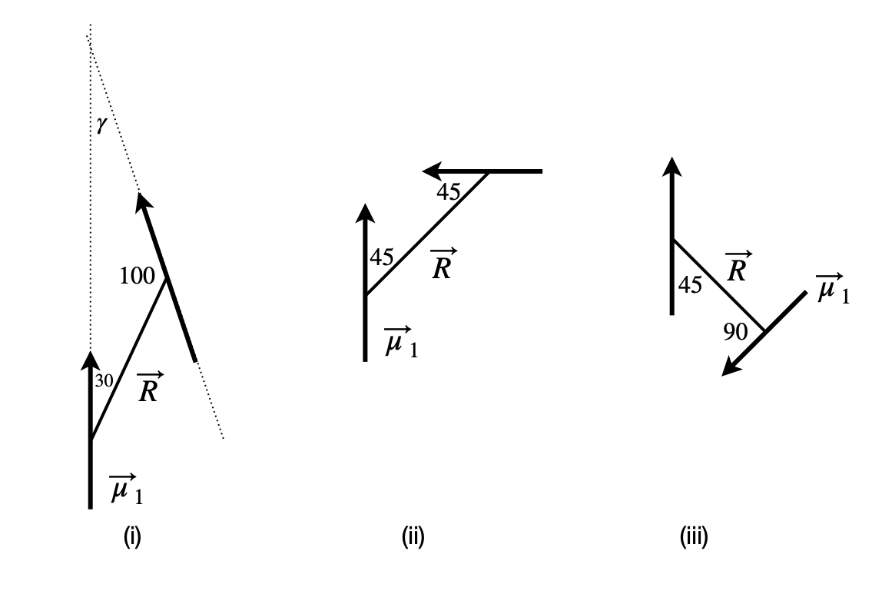
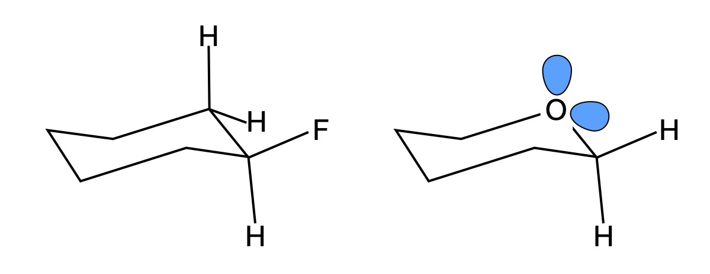

Questions 39 - 46
Contents
Questions 39 - 46#
Q39 Wavefunction#
The wavefunction in a 2-dimensional orthonormal vector basis set \((\varphi_1, \varphi_2)\) for a particular molecular orbital (eigenstate), is\(\psi_1 = a_1\varphi_1 + a_2\varphi_2\), and for another is \(\psi_2 = b_1\varphi_1 - b_2\varphi_2\). The amount of each basis set in each vector is \(a_1, a_2\) and \(b_1, b_2\).
(a) Calculate the dot product of \(\psi_1\) and \(\psi_2\) directly, using the summation formula and then using matrices.
(b) Normalise the wavefunctions.
Q40 Wavefunction#
Repeat the last example with \(a_1 = 2, a_2 = 2, b_1 = 2a_1, b_2 = 2a_2\). Normalize the wavefunctions and calculate their dot product. What can you conclude about the wavefunctions?
Q41 Normalise orbitals#
In the s and p-orbital basis set are the vectors \(\vec v_1 =\begin{bmatrix}2& 2 &2 & 2\end{bmatrix}\) and \(\vec v_2 = \begin{bmatrix}1& 1 &-1 &-1\end{bmatrix}/2\) orthogonal? Check if they are normalized.
Q42 Huckel MO’s#
Solving the Huckel MO’s for benzene produces the following un-normalized vectors in a 2p \(\pi\) orbital basis:
(a) Show that \(\vec v_2\) and \(\vec v_3\) are orthogonal to all others as are \(\vec v_5\) and \(\vec v_6\) but not to one another.
(b) Make a linear combination \(\vec v_2 \pm \vec v_3\) and \(\vec v_5 \pm \vec v_6\) and show that they are orthogonal to other vectors. Normalize the new vectors.
(c) If \(\pm\) signs represent orbitals phases, plot these new orbitals on a figure of benzene’s structure.
Q43 Dipoles in a plane#
Molecules without a centre of inversion possess a dipole. The dipole vector \(\vec \mu\) is the difference in positive and negative charges \(Q\) multiplied by their separation \(a\). Therefore, the dipole magnitude is \(|\vec \mu| = Qa\) which has units of coulomb metres. The coulomb is the SI unit of charge. (In figure 26, \(Q = 2\delta\).)

Figure 26. Any two dipoles interact. In the left figure, the interaction is attractive with negative interaction energy, but this is repulsive in the geometry of the middle figure. The right figure shows definitions of the relative angles of the three vectors \(\vec \mu_1\) and \(\vec \mu_2\) and \(\vec R\) all in the plane of the figure.
Any two dipoles \(\vec \mu_1\) and \(\vec \mu_2\) will interact with one another, and this depends upon their relative orientation and separation \(R\). If we perform a calculation of the interaction energy from first principles and assume that the dipoles are very small compared with their separation, then this energy in joules is
where \(\vec R\) is the vector along the line joining the centres of the two dipoles. In deriving this formula, the assumption has been made that the dipoles are small relative to their separation \(a \ll R\), and not as shown in the figure.
Assuming for simplicity, that the dipoles are arranged in the plane of the diagram;
(a) What is the largest (attractive and repulsive) and
(b) the smallest interaction energy between any two dipoles? Look for two different solutions here.
(c) In figure 27 where the dipoles are parallel, show that
Figure 27. Parallel dipoles.
(d) If the pairs of dipoles (i), (ii), and (iii) lie in the plane of figure 28, what is their interaction energy if \(|\vec \mu_1| =5\) D and \(|\vec \mu_2 =3\) D and \(R = 4\) nm? Calculate your answers in \(\mathrm{D^2\;nm^{-3}}\) and in joules. Compare this energy to thermal energy at room temperature \(k_B\)T, and comment on the result. (\(1\) debye, \(\mathrm{D} = 3.3356\cdot10^{-30}\) coulomb metres (C m), \(\epsilon_0\), the permittivity of free space = \(8.85418\cdot10^{-12}\;\mathrm{ C^2 J^{-1} m^{-1}}\).)
Strategy: Intuitively we can see that the maximum attractive force must occur when the positive and negative ends of the dipole are adjacent to one another and the dipoles are in line, as in the top of figure 26. Notice how the angles are defined and particularly angle \(\beta\). The maximum interaction must be equal and opposite to that of the minimum.

Figure 28. Dipole pairs.
Q44 Dipolar energy#
In the previous question the two dipoles were constrained to lie in a plane, the dipoles would have to lie flat on a surface to do this. Now suppose that two dipoles have arbitrary angles, as is normally the case in solution, and are separated by a distance R. The dipolar energy can be written as
The angles are shown in the diagram with angle \(\psi = \varphi_2 - \varphi_1\) between the planes containing \(\vec\mu_1-\vec R\) and \(\vec\mu_2-\vec R\). Derive the trig formula from the vector one and so show that the two forms of the equation are the same. The identity \(\cos(\varphi_2 - \varphi_1) = \cos(\varphi_1)\cos(\varphi_2) + \sin(\varphi_1)\sin(\varphi_2)\) is needed.
Strategy: This problem becomes easier to understand by redrawing the diagram. By rotating by approximately \(90^\text{o}\), it becomes more understandable when the axis is labelled as \(z\). The \(\theta\) are then identified as polar angles, and \(\varphi\) as the azimuthal angles in spherical polar coordinates, i.e. the question is defined in spherical polar coordinates and, although this is not stated, it is implied by the use of angles. To solve the problem, the \(x-, y-\), and \(z\)-values of the tip of the \(\vec\mu_1\) and \(\vec \mu_2\) vectors have to be found.
The dot products with \(R\) are easily calculated in terms of the angles. The \(\vec\mu_1,\;\vec\mu_2 \) dot product is more involved. Define a set of \(x-, y-\), and \(z\)-axes and work out the components of the dipole vectors on these axes then use the \(i, j, k\) or vector basis set to calculate the dot product.
Figure 29. two dipoles at arbitrary angles.
Q45 Anomeric effect#
In substituted cyclohexanes among other molecules, equatorial substitution is preferred because steric repulsion is minimized. In saturated ring molecules containing an oxygen atom, e.g. substituted tetrahydropyrans, the axial position is favoured in what is called the anomeric effect, which is an example of a stereoelectronic effect. The figure shows the most stable (preferred) geometry for each type of molecule.

Figure 30 Left: Equatorially substituted fluorocyclohexane. Right: An axial substituted fluorotetrahydropyran, which is the most stable. This is rationalized as due to the anomeric effect.
The anomeric effect is thought to be caused by the O atom’s non-bonding electrons partially transferring their charge into an anti-bonding (\(\pi^*\)) orbital on the carbon atom, which is bonded to an electrophyllic substituent such as a halogen, X; this is sometimes called a hyper-conjugation resonance effect. The effect this has is to shorten the ring CO bond by a small amount, about \(10\) pm, and lengthen the substituent C-X bond by a similar amount. However, solvent polarity also has an effect on the ratio of equatorial to axial substituents, which suggests that the dipole - dipole (or possibly induced dipole - dipole) interaction may contribute. For example, in the tetrahydropyran shown above when X = OMe the percentage of axial substituted molecules changes from \(83\)% in CCl4 with a dielectric constant of 2.2, to \(52\)% in water, with a dielectric constant of 78.5 (Pialy & Lemieux 1987).
Supposing that the lone pair electrons have an effective dipole \(\vec \mu_O\) pointing along the putative sp\(^3\) (tetrahedral) bond direction and that the C-X bond has a dipole \(\vec \mu_x\) you will need to calculate and compare the total dipole - dipole interaction when the C-X substituent is in the axial and then equatorial position.
(a) Perform a thought experiment to determine whether axial or equatorial dipole-dipole interaction is favoured. The interaction energy calculated according to equation 37 must be multiplied by \(1/\epsilon\) where \(\epsilon\) is the dielectric constant. Use this to explain the solvent effect.
(b) Calculate energies assuming that the CO bond length is \(d\), and the dipoles are \(\vec \mu_x = \beta\vec\mu_{nx}\) and \(\vec\mu_O = \alpha\vec\mu_{nO}\) for the substituent and on the oxygen atom respectively. The unit dipoles are \(\vec\mu_{nx}\) and \(\vec\mu_{nO}\) and \(\alpha,\;\beta\) are their respective sizes. Let the vector \(\vec R\) in the dipole equation 37 be between the C and O atoms rather than the centre of the dipoles, because this simplifies the calculation; this should not alter the nature of the result.
Strategy: In (a) it serves to sketch the dipole directions. It is assumed that the non-bonding orbitals have dipoles along the normal bond directions; they could be combined vectorially into one dipole but this offers little advantage to us. In (b) the geometry of the molecule has to be determined, the bonds are tetrahedral, which means that if a carbon atom is at the centre of a cube its bonds end at \((1, 1, 1), (1, -1, -1), (-1, 1, -1), (-1, -1, 1)\). Assume that the O atom is sp\(^3\) hybridized.
Q46 Dipole-dipole energy transfer#
Excitation energy can be transferred from one molecule to another by the dipole - dipole mechanism as first described by Forster (Turro 1978). Schematically, the process is \(D^* + A \to D + A^*\) where donor species \(D\) is electronically excited by absorbing a photon and transfers its energy to acceptor \(A\) which then becomes excited. The rate constant \(k\) for transfer varies as
where c is a collection of fundamental constants, \(k_f\) the radiative rate constant of the donor, \(Q\) is an integral whose value measures the overlap of the emission spectrum of the donor and absorption spectrum of the acceptor and ensures energy conservation. \(R\) is the separation of donor and acceptor and \(chi^2\) measures the orientation of the two transition dipoles involved and is
where \(\vec r\) is the unit vector along the line separating the dipoles and \(\vec\mu_1\) and \(\vec\mu_2\) are unit vectors along the dipole directions. Unit vectors must be used since \(\chi^2\) is only a measure of relative orientation.
The X-ray coordinates for two of chlorophyll molecules are listed below in angstrom and are from the RCSB Protein Data Bank (www.rcsb.org/pdb/home.do 1VCR). The chlorophylls are part of the structure of a chlorophyll protein complex from a photosynthetic organism. The coordinates from the protein database are downloaded as .pdb or .ent structure files and are always given in right-angled \(xyz\) axes. Calculate:
(a) The separation of the two Mg atoms \(d_{Mg-Mg}\) and normalize the Mg to Mg atom vector.
(b) The orientation parameter \(\chi^2\) for energy transfer between chlorophyll molecules assuming the dipoles lie on the line from the Mg to nitrogen atom ND on each molecule. For the purpose of this calculation, you may assume that the unit vector \(\vec r\) lies along the line of the Mg–Mg atoms, rather than from the mid-points of the dipole vectors. Take Mg 498 as belonging to the donor molecule.
Strategy: Locate the coordinates in the table for each atom. Calculate the distance vector \(\vec R = \vec p - \vec q\) using the coordinates and its magnitude \(|\vec R |\) that is the separation of the Mg atoms. Assume that the origin of the coordinates is at (0, 0, 0).

Figure 31. A partial structure of the chlorophyll molecules in a photosynthetic pigment protein complex. A Mg atom is situated in the centre of each molecule. Chlorophyll belongs to a class of molecules called chlorins, but the structure shown here is of a porphyrin as ring 5 was omitted from the X-ray structure. The surrounding protein is present in the X-ray data but is not shown for clarity. The origin of coordinates is only shown diagrammatically and does not represent the true origin.